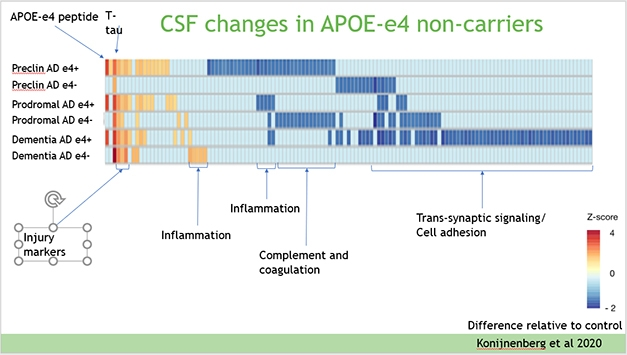
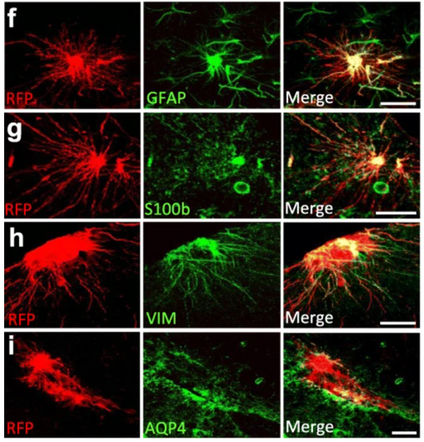
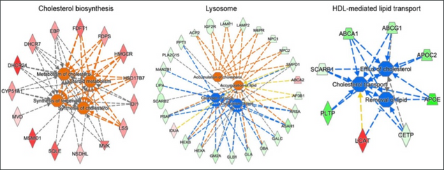
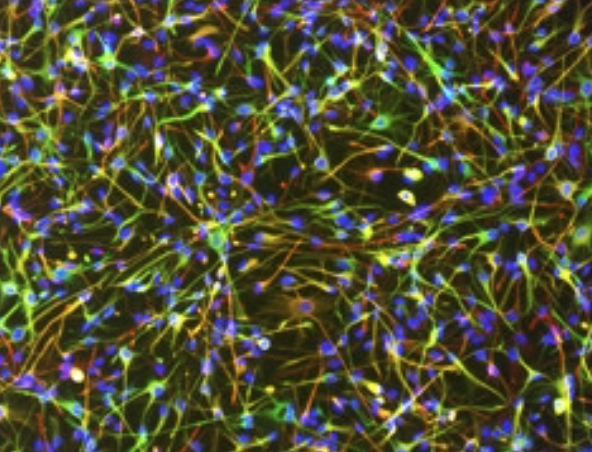

Nature Aging interview: APOE4 dysregulates cholesterol homeostasis in human microglia and astrocytes
2022, Nature Aging
Nature Aging highlighted Dr. TCW's work on APOE4 dysregulation of cholesterol homeostasis in human microglia and astrocytes.
Do Lipids Lubricate ApoE's Part in Alzheimer Mechanisms?
05 November 2021, Alzforum

APOE4 Glia Fumble Lipid Handling
APOE is an apolipoprotein, tasked with ferrying cholesterol and other lipids between cells. In the brain, it is produced mainly by astrocytes and activated microglia. Recent work by Julia TCW and Alison Goate at Icahn School of Medicine, Mount Sinai, New York, found the E4 allele disrupts the lipid balance in astrocytes and microglia derived from human iPSCs, boosting cholesterol production while hobbling its export (Jul 2018 news; Apr 2019 conference news). This imbalance allows lipid droplets to build up inside glia, and triggers inflammation (Aug 2019 news; Mar 2021 news).
Human iPSC-derived astrocytes transplanted into the mouse brain undergo morphological changes in response to amyloid-β plaques
25 September 2020, Molecular Neurodegenration

Background
Increasing evidence for a direct contribution of astrocytes to neuroinflammatory and neurodegenerative processes causing Alzheimer’s disease comes from molecular and functional studies in rodent models. However, these models may not fully recapitulate human disease as human and rodent astrocytes differ considerably in morphology, functionality, and gene expression.
Results
To address these challenges, we established an approach to study human astrocytes within the mouse brain by transplanting human induced pluripotent stem cell (hiPSC)-derived astrocyte progenitors into neonatal brains. Xenografted hiPSC-derived astrocyte progenitors differentiated into astrocytes that integrated functionally within the mouse host brain and matured in a cell-autonomous way retaining human-specific morphologies, unique features, and physiological properties. In Alzheimer´s chimeric brains, transplanted hiPSC-derived astrocytes responded to the presence of amyloid plaques undergoing morphological changes that seemed independent of the APOE allelic background.
Conclusions
In sum, we describe here a promising approach that consist of transplanting patient-derived and genetically modified astrocytes into the mouse brain to study human astrocyte pathophysiology in the context of Alzheimer´s disease.
AD Genetic Risk Tied to Changes in Microglial Gene Expression
09 August 2019, BioRxiv
Geneticists have found dozens of loci that associate with Alzheimer’s disease, but the functional variants and even the genes that underlie these associations often remain elusive. Now, researchers led by Alison Goate and Edoardo Marcora at the Icahn School of Medicine, Mount Sinai, New York, describe a method for quickly finding causal genes and variants in risk loci of myeloid cells. Starting with 16 AD risk variants located in enhancers, the DNA regions that influence transcription, the researchers linked each locus to changes in expression of a downstream gene that correlated with AD risk. Nine of the genes had not been associated previously with AD. For eight of the 16 enhancers, the researchers pinpointed the specific genetic change that affected expression. All were point changes that disrupted binding of transcription factors.
Cholesterol and matrisome pathways dysregulated in human APOE ε4 glia
25 July 2019, BioRxiv

Figure: Functional pathway analysis of hiPSC-derived microglia. Red and orange colors are upregulated, green and blue are downregulated genes/functions in APOE 4 compared to APOE 3. Reproduced with permission from Figure 2g of the preprint.
What was found?
Lipid metabolism related pathways are dysregulated in human but not mouse APOE 4 glia
RNAseq analysis of hiPSC-derived cell lines showed APOE genotype-dependent gene expression discrepancies in astrocytes, microglia, and mixed cortical cultures, but not brain microvascular endothelial cells. The authors found that specific pathways were differentially regulated in APOE 4 versus APOE 3 glia, with greatest discrepancies in lipid metabolism pathways. Differences in gene expression predicted an increase in cholesterol synthesis and metabolism in APOE 4 glia. A reduced lipid/cholesterol efflux, lysosomal accumulation of cholesterol, and a decrease in lipid clearance and catabolism were predicted for microglia (Figure), only. The deconvoluted glia transcriptome of human AD brain tissue supported these findings.
ApoE and Tau: Unholy Alliance Spawns Neurodegeneration
15 April 2017, Alzforum

To that end, Julia TCW, a postdoc in Alison Goate’s lab at Mount Sinai School of Medicine in New York, presented her latest findings in astrocytes generated from human iPSCs. The researchers generated 42 astrocyte lines derived from 30 people, including men and women, as well as healthy controls and people with AD. The cells behaved similarly to primary astrocytes harvested directly from the human brain, gobbling up myelin in response to glutamate, TCW reported. They also appeared to exist in a quiescent, resting state unless given a stimulus. This quiescence was of utmost importance, TCW stressed, as hyper-reactivity is a common problem with primary astrocytes isolated from the human brain.Interestingly, astrocytes generated from people carrying two copies of ApoE4 expressed higher resting-state levels of the inflammatory cytokines IL-6 and IL-8 than did cells from people with an E3/E3 genotype. Treatment of astrocytes with Aβ42 or tau oligomers boosted cytokine secretion regardless of ApoE genotype, however, E3/E3 astrocytes had a larger increase in cytokine secretion, perhaps owing to their lower baseline levels, TCW said.
While Holtzman proposed that ApoE may primarily modulate astrocyte activation indirectly via microglia, TCW’s work suggests that ApoE isoforms also directly affect astrocytes in both resting and activated states. TCW hypothesized that cross talk between microglia and astrocytes occurs within the complex cellular milieu of the brain, although cause and effect relationships are difficult to unravel. She also noted that ApoE’s lipidation state—which differs between mice and humans—influences its activity. This makes human iPSC-derived models more relevant to understanding how ApoE affects neuroinflammation, she added.